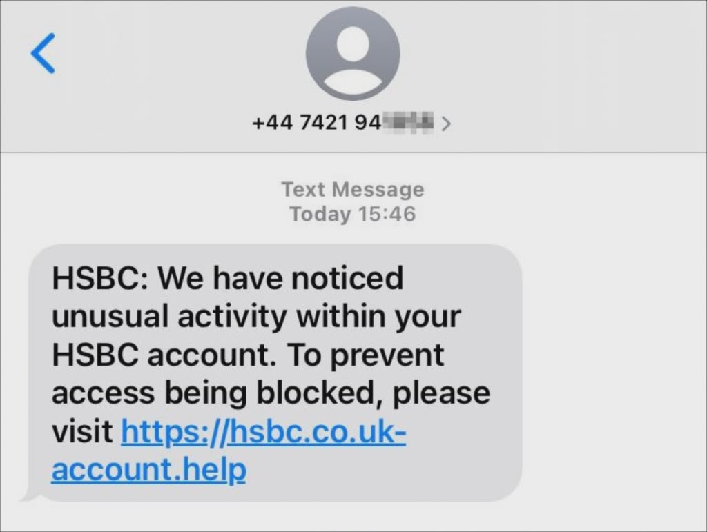
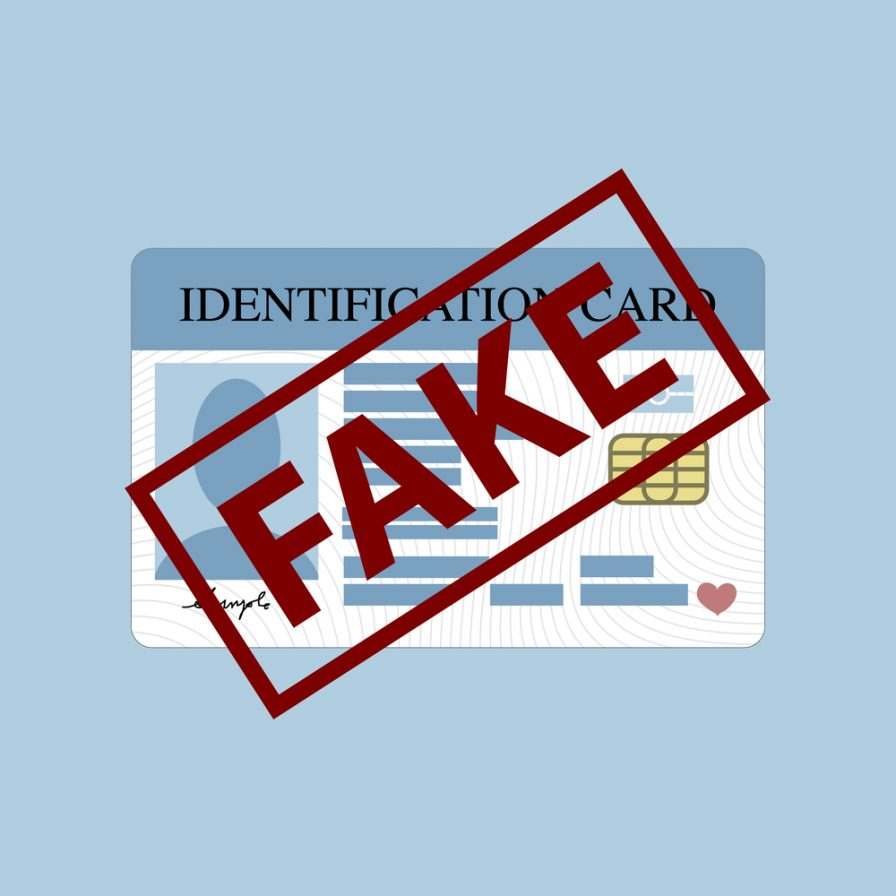
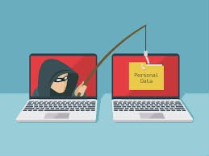
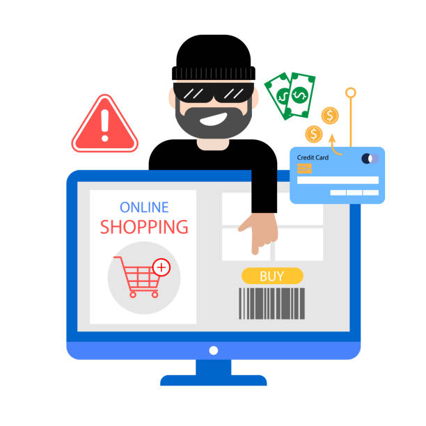
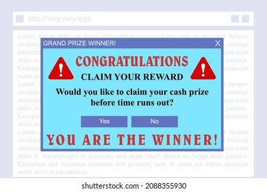

Online scams are becoming more common and convincing. This website was created to educate students about scams, how they work, and how to avoid becoming a victim.
Learn MoreA scam is a dishonest scheme designed to trick people into giving away money, personal details, or access to accounts.

Scammers pretend to be trusted organizations such as banks, online stores, or government agencies.

Scams pressure people into acting quickly and emotionally.

Fake emails or messages asking for passwords or OTPs.

Fake sellers offer cheap items that never arrive.

You "win" a prize but must pay a fee or give info.
Awareness and caution are your best defense online.
Verify sources, protect personal info, and ask for help if unsure.
Please answer the following questions to share your experience and thoughts about online scams.